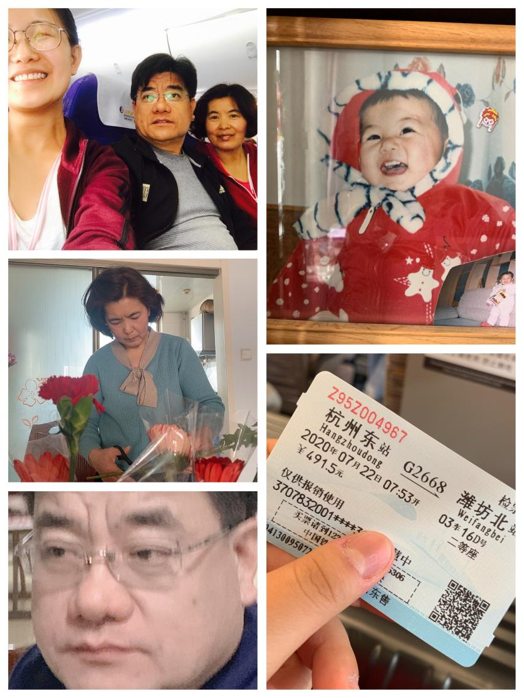
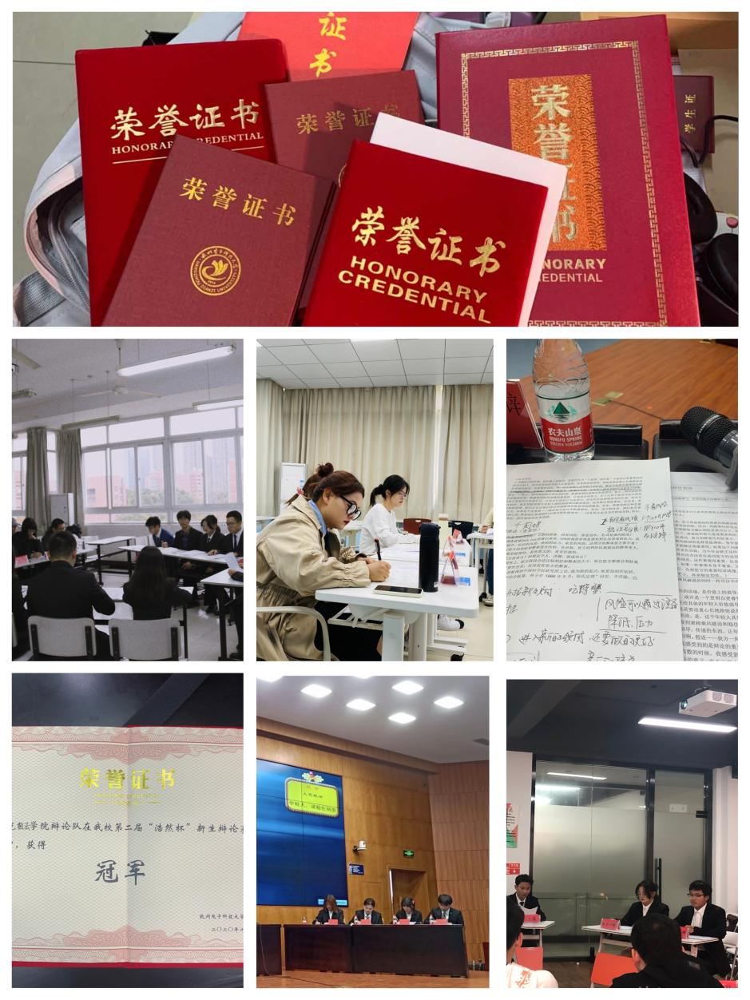
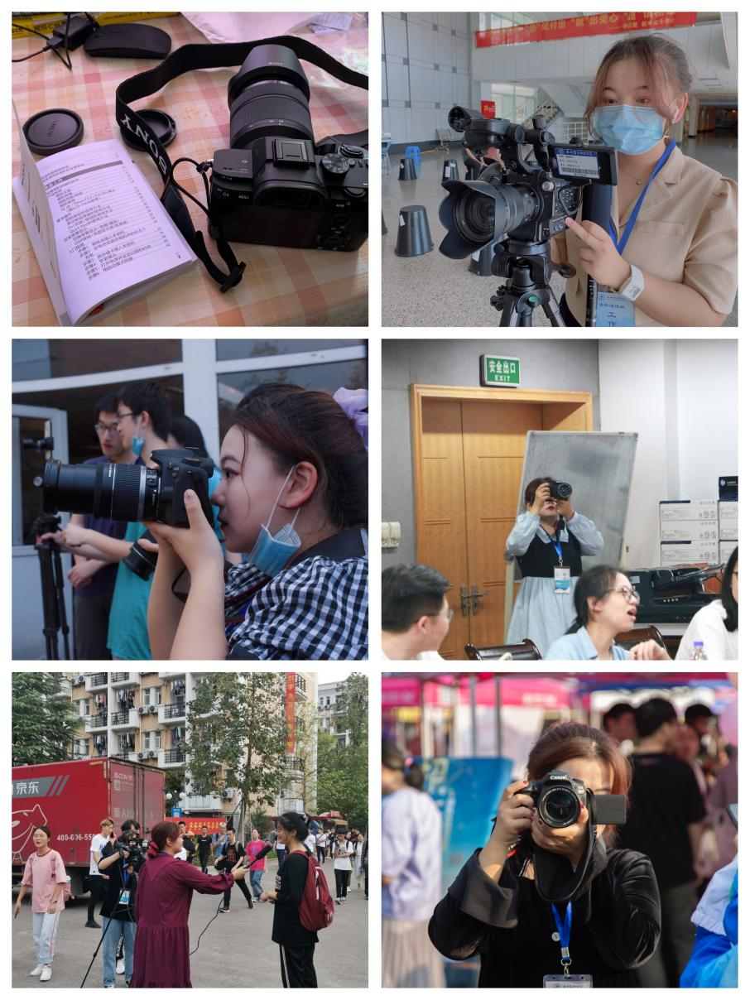

I was born and raised in Shandong province.Northerners are simple and honest.When they see people in need，t
hey help without thinking about what they will get in return.
They are used to trusting others,which in the opinion of other provinces is really stupid.
Growing up in such an environment,I also bacame a typical Shandong girl.
I have a boyish personality.I’m warm to everyone.When I meet a stranger ,
I will not be afraid of greeting and chatting with him or her.

My family plays the most important role in shaping my character and forming my values.
My parents are very open-minded people.They never restrict my hobbies and thoughts.
Reading,writing,going to college far away from home,majoring in journalism,
joining a debating society,filming,geting into graduate school,
to be a good journalist,which are all my ideas and they never interfere with me.
My father always tells me that he has already aged both physically and mentally,
while I,as a young man,am more suited to the rhythm of the times with my ideas.
He does not interfere with me not only because he respects my choices,
but also because he believes my choices are right.Under their education,
I became a brave and independent-minded person.
I have a clear plan for my future and I keep working hard to achieve my goal.
It’s important to have a vision,a plan and a dream.
Although they are open-minded,they,like all parents in China
,are concerned about my academic performance.
When I was a child ,my grades were not very good ,
my father would severely creticize me,even in order to remind me of this lesson he beat my plam.
All of these experiences let me develop the habit that whatever I do,
I will try to do it well and never give up halfaway.In my opinion ,it is a shame to give up halfway.
Like many families my parents like to quarrel.Whether over the renovation of their new house or over a plate of dumplings,
they often settle problems by quarreling.Such a family atmosphere has seriously affected my character and the way I deal with people.
I became a very sensitive person who cares a lot about what other people think of me.In order to make others happy and let others like me,
I can do something to please others,this is probably a people-pleaser.As much as I hate it ,I can’t get rid of it.
In addition,after watching my parents quarrel when I was a child,I gradually learned to solve problems by quarreling and adopting a tough attiude.
The influence of the family of origin on a person is like a brand that is hard to remove.My family of origin has also changed the way I think about marriage.
Marriage is the tomb of love,two people in marriage can only bring pain to each other.If you really love someone,you should always be in a relationship,
not going to marriage.The trifles in your life will make you tired and numb,and you will gradually lose love for your lover.
I still have no intention of getting married or having children.I believe I can live well with my friends and family without a husband.In a word,
my family of origin played a great role in my growth.I think it is a lucky thing to be my parents’ child,because they give me enough freedom and help.
I like the hard-working,determinded and goal-oriented myself very much.
My mother is a Buddhist and she has a great influence on my faith.Only people who are in pain will embrace a god because they believe that the god can save them.
When I was in high school,I was introduced to Buddhism with my mother.Life was really painful at that time because the academic pressure was really heavy.
When I was in a constant state of stress,every thing in a human relationship could break me down.At that time,
I felt that my teachers did not think highly of me and my friends did not trust me.I told my mother and she constantly influenced me with Buddhist thoughts.
She taught me to be grateful.She said that everything we are going through now is a gift from Buddha,even if it is a short time of pain and hardship,
it is also for us to gain something from this experience.I am happy now,but I still remember this thougtht.Whenever I encounter diffculties,
I will tell myself that this is the Buddha arranged for you,he is helping you grow up,you should not only be grateful,but also work hard to get through the difficulties.
I have been in a boarding school since the second grade of primary school.Eight years of boarding school experience has made me a very independent person in my life.
Besides the basic life skills such as washing clothes and cleaning,I am also good at cooking.When I was young,I was taken care of by my grandmother,who was very patient.
She taught me a lot of cooking tips.I still remember that I stood on a bench to learn how to knead the dough.The gains of the cooking process is not only a filling dish ,
but also some knowledge and love of life.I became more and more patient in the process of cutting the potatoes.I feel the beauty of life when I taste the chicken made by myself.

When I am in college,I joined the debating society,which is a competitive society.There are competition almost every week.Every day,besides attending classes,
I spend all my spare time preparing for the competition.I need to search a lot of literatures,write and discuss with my teammates.I usually prepare for competition until 12:30 in the morning.
The debate experience has enabled me to have better expression skills and logical thinking skills.There are many excellent people in the debating society.
They can not only won a lot of awards in the debate,but also won various honors school competitions,national scholarships.Although I could not ba as excellent as them,
I gradually learned some of their qualities under their influence.There is a culture in the debating sociaty that even if you force yourself to become very tired,you can not easily give up.
To be honest,I am not an industrious human.But the experience in the debating society has made me a hard-working and persistent person.

I am an Aquarius.I grew up in an open family,which made me fully realize the meaning of freedom.I value freedom very much.
In my opinion,as a human,you should decide what your life like.Nobody can make decision for you.
Because only the people who grow up in a free environment can be independent in mind.
Only when you live your chosen life can you be full of fighting spirit.
Your beliefs,hobbies,sexual orientation,
job and thoughts are up to you and no one can interfere with you.
If you follow the advice that a girl should be a civil servant of your elders,
you will not feel happy even you really live a stable and prosperous life.
In addition,I also value the realization of personal value.
Career is always greater than friendship and love.
As I mentioned earlier,many of our elders hope their daughters to have a stable life.
But I don’t think so,why can not girls have their own dreams and fight for their dreams boldly like boys?
My dream is to be a reporter like Joseph Pulitzer,speaking for the people and exposing the dark side of society.
I have a university teacher who deeply influenced me.She told us,as a journalist,before doing anything,
please think carefully that what can make the word a bit better.As a member of this world,
I would like to repay the world in this way.